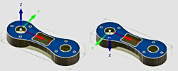

<div id="view_orientation_flipZ"><p>Inverte l'asse Z di 180 gradi.</p>
<table class="tipTable" cellspacing="10">
<tr>
<td><center></center></td>
</tr><tr>
<td><center><p>'''Inverti direzione dell'asse di 180 gradi'''</p></center></td>
</tr></table>
</div>